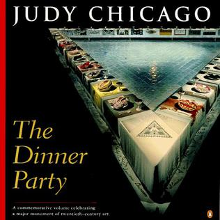
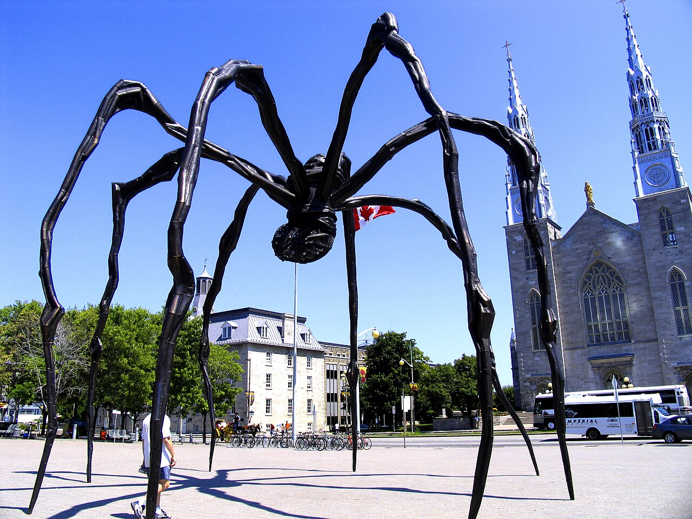

The Dinner Party
Contemporary / feminist artUnited StatesInstallation
A landmark intervention into whose stories art history remembers.
Open source / museum context ↗c. 1970 → now
Installation, identity, memory, institutions, media, and global circulation



What to notice
Contemporary art is not one look but a mixed field of installation, photography, performance, identity, institutions, media, memory, and global circulation.
Key works
Start with the image, then use the note to fix the main point in your mind.
A landmark intervention into whose stories art history remembers.
Open source / museum context ↗
Identity and image-making become performances in themselves.
Open source / museum context ↗Contemporary art can be monumental, psychological, and symbolic at once.
Open source / museum context ↗Where to go next